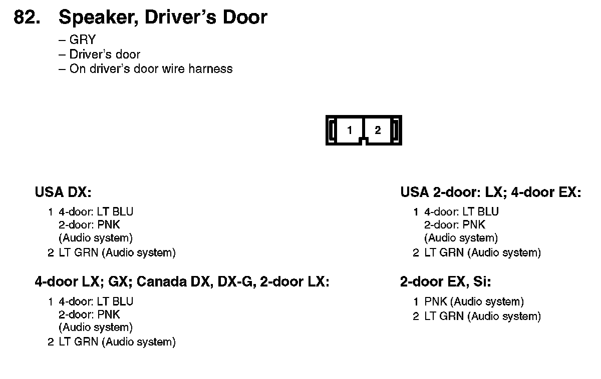
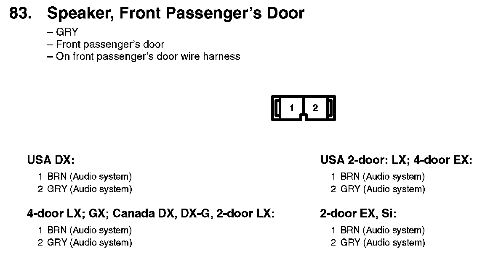
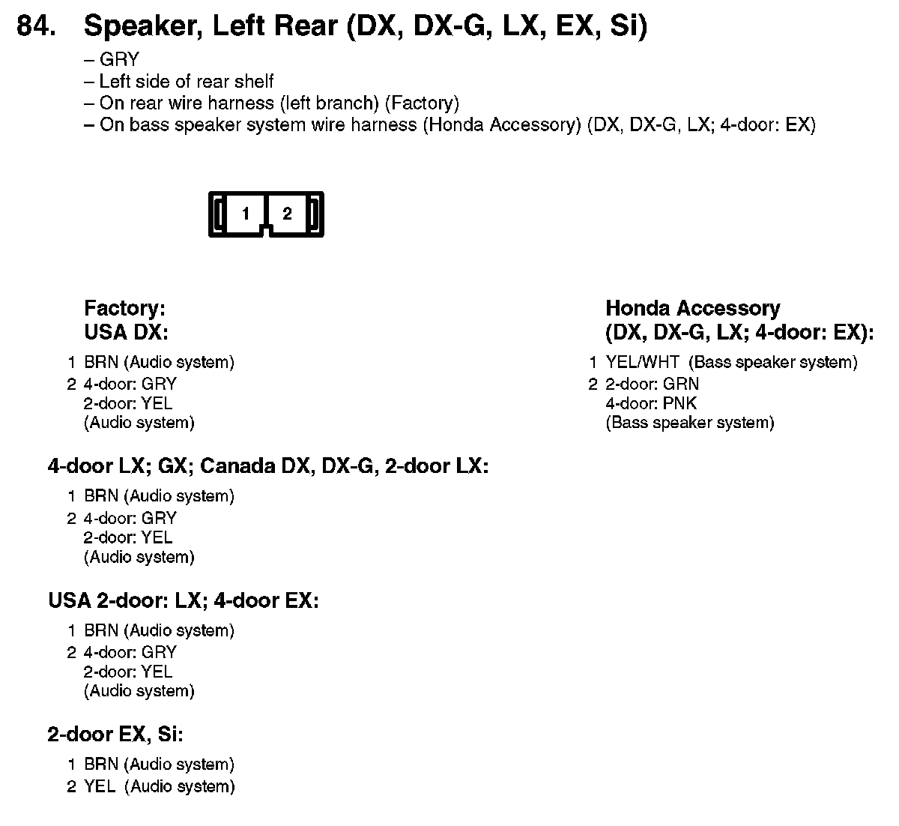
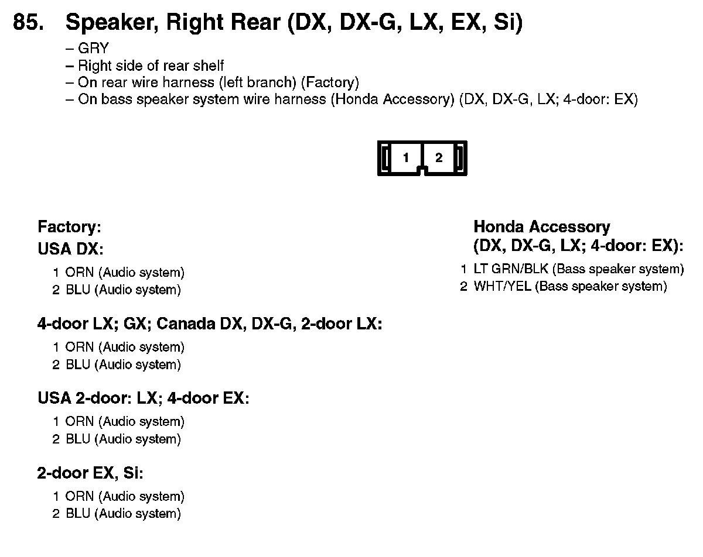
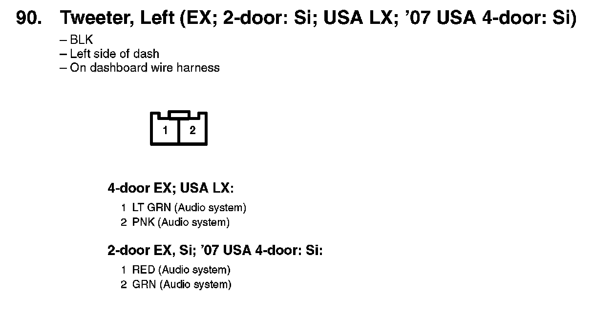
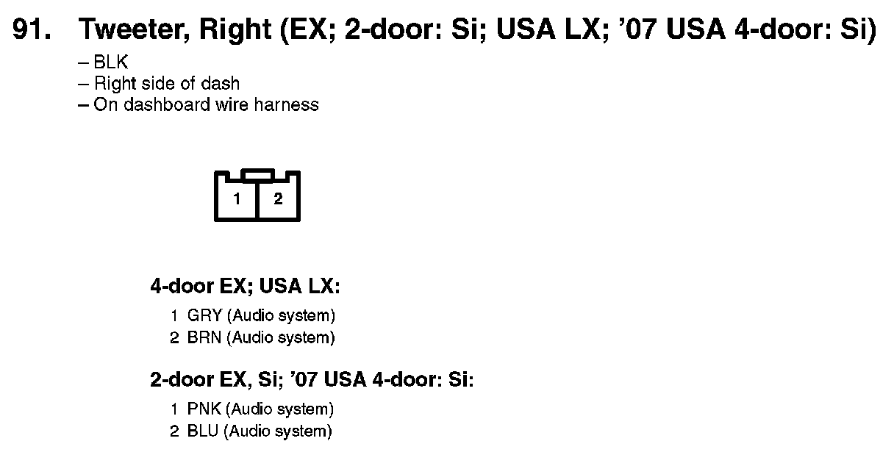
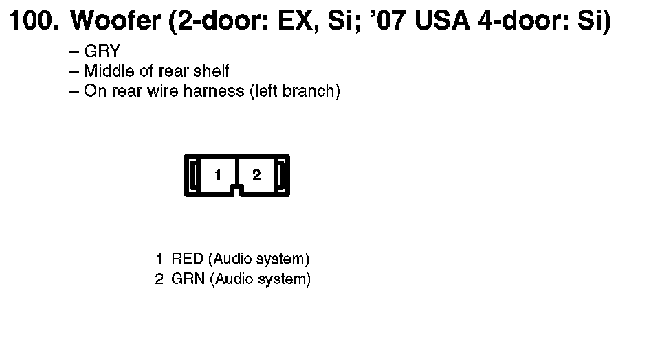

Speaker: Diagrams
82. Speaker, Driver's Door:

83. Speaker, Front Passenger's Door:

84. Speaker, Left Rear (DX, DX_G, LX, EX, Si):

85. Speaker, Right Rear (DX, DX-G, LX, EX, Si):

90. Tweeter, Left (EX; 2-door: Si; USA LX; '07 USA 4-door: Si):

91. Tweeter, Right (EX; 2-door: Si; USA LX; '07 USA 4-door: Si):

100. Woofer (2-door: EX, Si; '07 USA 4-door: Si):
